Lorenzo Mangini — Director, Director of Photography, Camera Operator
Lorenzo Mangini is an international Director & Director of Photography based in Italy, specializing in high-end commercials, documentaries & narrative fiction.
For brands & events Vertical ADV — full production, from concept to delivery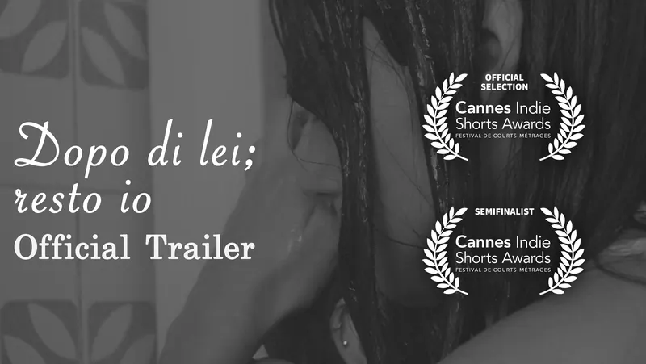
01 Dopo di lei; resto io Trailer Ufficiale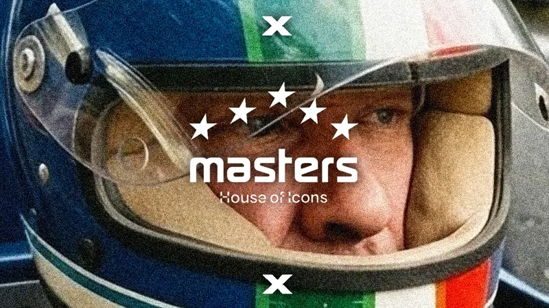
02 Autodromo di Monza x Masters Historic Racing Reel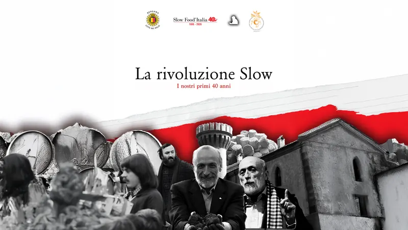
03 La Rivoluzione Slow: I nostri primi 40 anni Docu 04
Experience Fitness Club Commercial
04
Experience Fitness Club Commercial
 05
Golden Notes, con Giovanni Falzone DOCU 10' Cut
05
Golden Notes, con Giovanni Falzone DOCU 10' Cut
 06
Looperfest '27 ADV Campaign
06
Looperfest '27 ADV Campaign
 07
Subvoce Documentario
07
Subvoce Documentario
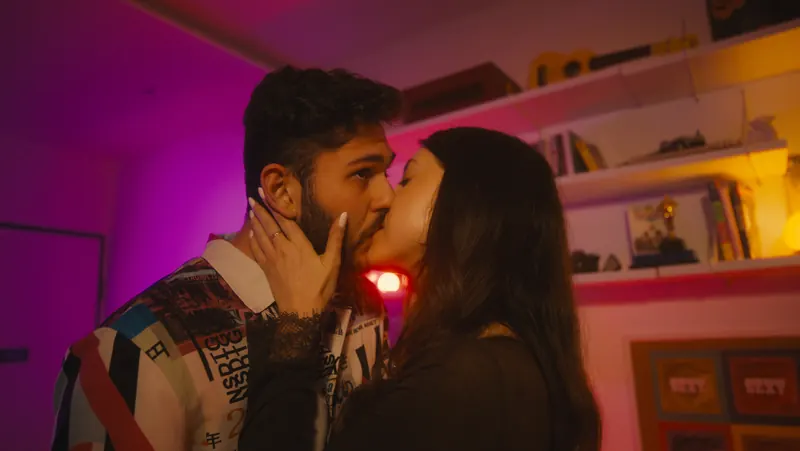
08 La cosa più sexy SPOT Medici del Mondo 2026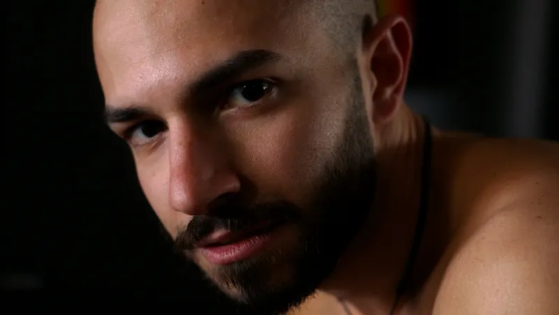
09 FORGE Gym SPOT 2026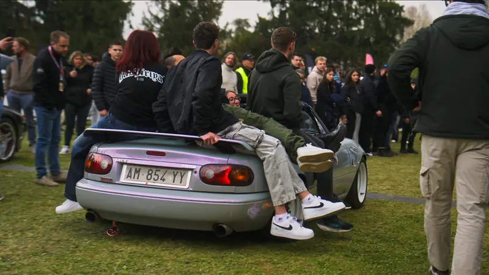
10 OVERREV Documentary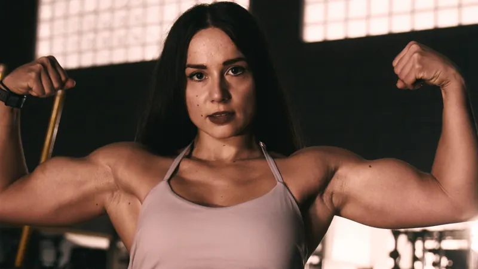
11 FORGE: Reels ADV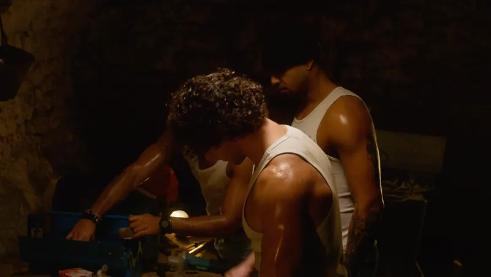
12 FORGE: Teaser ADV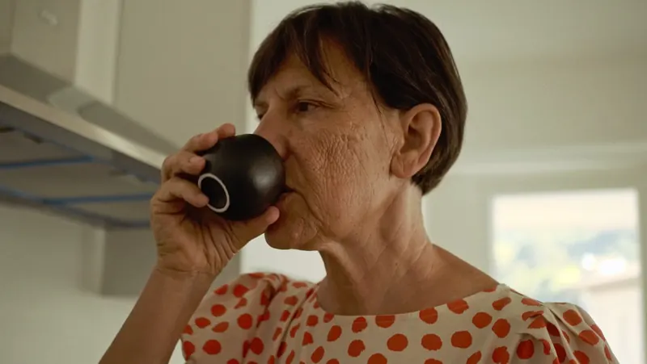
13 Un Caffè con Erminia Slow Food Documentary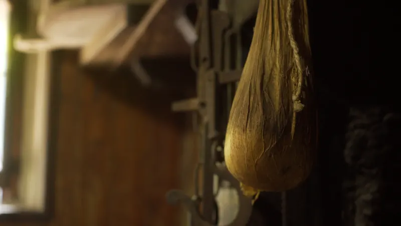
14 RADICI, Storie di Slow Food 15
Il Silenzio dei Boschi
15
Il Silenzio dei Boschi
 16
Nicole
16
Nicole
 17
Vertical ADV
17
Vertical ADV

 18
RONDO X BLU BASKET Photos
18
RONDO X BLU BASKET Photos
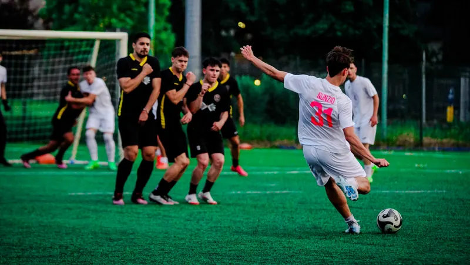
19 Eurobucci 2025 Photos